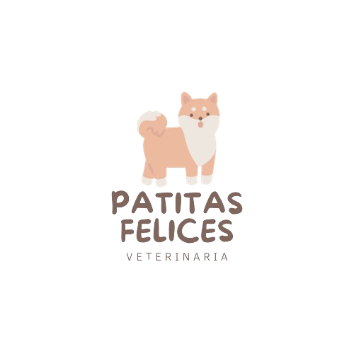

<div class="container">
  <div class="sidebar" [ngClass]="{ hidden: !sidebarVisible }">
    <div
      class="text-align-center"
      [style]="{ background: '#fdf8ef', 'text-align': 'center' }"
    >
      
    </div>
    <div class="sidebar-content">
      <div class="card flex justify-content-center">
        <p-panelMenu [model]="menus" [style]="{ width: '300px' }"></p-panelMenu>
      </div>
    </div>
  </div>
  <div class="main-content" [ngClass]="{ 'full-width': !sidebarVisible }">
    <header [ngClass]="{ prueba: !sidebarVisible }">
      <div class="navbar align-items-center">
        <div class="flex align-items-center">
          <p-button
            class="btn-burguer"
            icon="pi pi-bars"
            (click)="toggleSidebar()"
          ></p-button>
          <div
            class="p-toolbar-group-center"
            [style]="{ 'margin-left': '20px' }"
          >
            <span class="p-input-icon-left">
              <i class="pi pi-search"></i>
              <input pInputText placeholder="Search" />
            </span>
          </div>
        </div>
        <div
          class="block-configuration"
          [style]="{ position: 'absolute', right: '10px' }"
        >
          <p-button
            type="button"
            icon="pi pi-user"
            [rounded]="true"
            severity="info"
            (click)="menu.toggle($event)"
          ></p-button>
        </div>
      </div>
    </header>
    <div class="body-container">
      <div>
        <p-breadcrumb
          class="max-w-full page-header"
          [model]="items"
          [home]="home"
        ></p-breadcrumb>
      </div>
      <router-outlet></router-outlet>
    </div>
  </div>
</div>
<p-menu
  #menu
  [model]="configurationUser"
  [popup]="true"
  [style]="{ 'z-index': '1025' }"
></p-menu>
